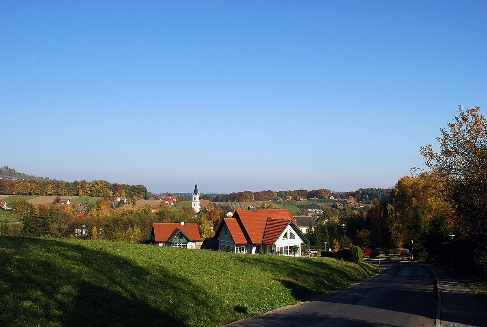
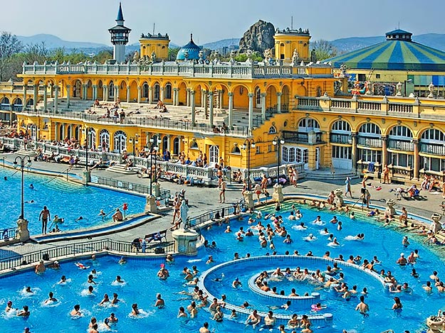
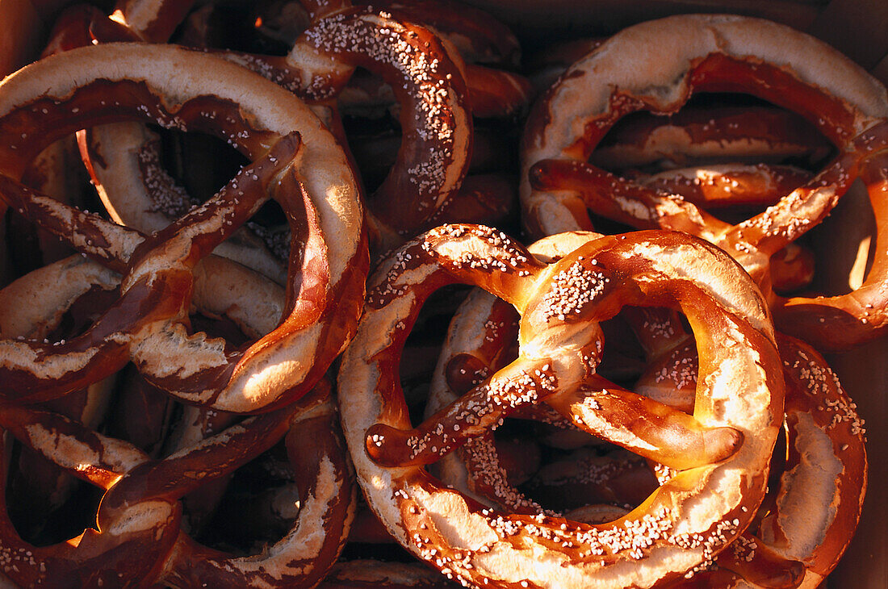

Home
Home
Resume
Itenerary
Wordle
2025 Europe Itenerary
Vienna → Bad Gams → Budapest → Munich
Jump to:
Explore Flight Delay & Tweet Data
|
Vienna
|
Bad Gams
|
Budapest
|
Munich
Explore Flight Delay & Tweet Data by Sue Grist
Vienna, Austria
Things to do:
St. Stephens Cathedral & Catacomes
United Nations
Vienna National Library
Hundertwasser Haus
Sisi Museum
Biking Around Prater
Eat Weinersnitzle
Bad Gams, Austria

Things to do:
Visit the Hotel
Riegersberg Castle
Pottery Shop
Hike to the Church
Budapest, Hungry

Things to do:
Buda Castle
Hungarian Parliament
Fisherman's Bastion
Natural Spas
Hospital in the Rock
Shoes on the Danube Bank
Central Market Hall
Dohany Synagogue
St. Stephen's Basilica
Munich, Germany

Things to do:
Marienplatz Glockenspiel
Dachau Concentration Camp
Neushwanstein Castle
Eat a Pretzel
BMW Museum
Back to Top